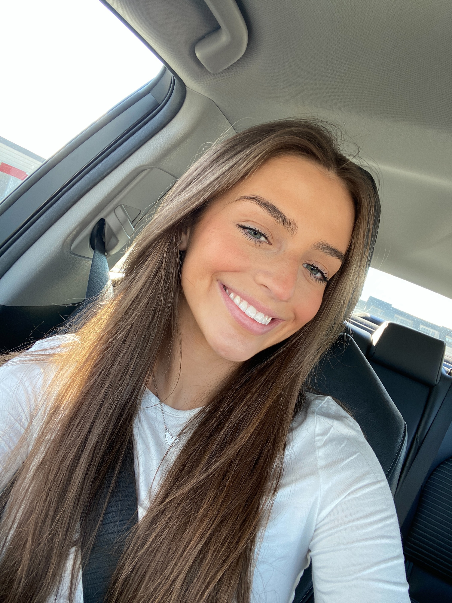

Resume
Contact
Email: clairemasi3339@gmail.com
Phone: 703-939-5216
1234 Happyplaza St.

Skills
- Proficient in Canva
- Intermediate in WordPress
- Proficent in Microsoft
- Basic knowledge in HTML
Education
James Madison Univerity
- Major field of study: School of Media Arts and Design
- Concentration: Creative Advertising
- Expected graduation: May 2024
Stone Bridge High School
- High school degree
- 2016-2022
Work Experience
Lansdowne Resort Pool Server May 2022- Aug. 2022
- Consistently provided professional customer service to all pedestrians at the pool. Waited on the members and brought out their food to them in a timely fashion. Learned the in and outs of working at a resort.
- Lansdowne Resort Website
Chick Fil A Team Member Dec. 2018- Dec. 2020
- Consistently provided professional customer service and followed all safety and sanitation policies when handling food and beverages to uphold proper health standards.
Crystal Aquatics Lifeguard June 2018- Sept. 2018
- Observed and organized the activities of swimmers, enforcing applicable pool policies and regulations, and provided excellent customer service to all pool patrons.
Activities
- Sorority: Alpha Phi at James Madison University, 2020-present
- Clubs: Key Club International Service Organization 2016-2020, Make a Wish Club 2022-present Make a Wish JMU Facebook Page
- Sports: Varsity cheerleading 2016-2020, JV lacrosse 2018
Accomplishments
- Academic honor roll 2016-2020
- Athletic honor roll 2016-2020
- Director of events for Alpha Phi 2022
- Position on Philanthropy Committee for Alpha Phi 2021
- Raised over $16,000 during one event with Alpha Phi for Womens Heart Health 2022